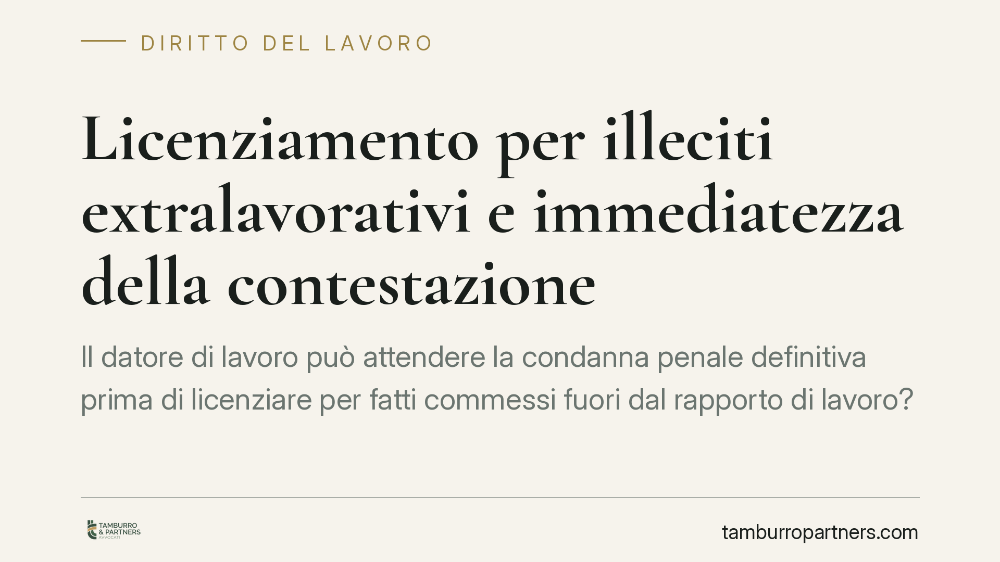

Licenziamento per illeciti extralavorativi e immediatezza della contestazione
Il datore di lavoro può attendere la condanna penale definitiva prima di licenziare per fatti commessi fuori dal rapporto di lavoro? La risposta dipende dalla disciplina contrattuale e da un principio spesso frainteso: l'immediatezza della contestazione disciplinare va letta in senso relativo, non assoluto. Vediamo cosa dice la giurisprudenza consolidata e cosa significa, in concreto, per aziende e lavoratori.

Il problema: fatti esterni e tempi della reazione datoriale
Un illecito commesso dal dipendente al di fuori dell'attività lavorativa può giustificare il licenziamento. Accade quando il fatto, pur estraneo alle mansioni, incide sul rapporto fiduciario o sull'immagine dell'impresa: pensiamo a reati contro il patrimonio o a condotte incompatibili con un ruolo di responsabilità (ad esempio un quadro con funzioni di fiducia).
Il nodo è temporale. L'art. 7 della Legge n. 300/1970 (Statuto dei lavoratori) impone che la contestazione dell'addebito sia tempestiva. Ma se l'accertamento del fatto passa per un procedimento penale, può il datore attendere l'esito del giudizio prima di contestare e sanzionare? Oppure rischia di vedersi eccepire la tardività?
Inquadramento normativo
L'art. 7 dello Statuto non fissa un termine numerico per la contestazione. La giurisprudenza ne ha ricavato il principio di immediatezza, che tutela due interessi: il diritto di difesa del lavoratore, che deve poter ricostruire i fatti quando sono ancora recenti, e l'affidamento del dipendente sulla rinuncia del datore a sanzionare un comportamento troppo risalente.
La Cassazione ha però chiarito, con orientamento costante, che l'immediatezza va intesa in senso relativo (tra le altre, Cass. Sez. Lav. n. 1248/2015 e la giurisprudenza successiva conforme). Il termine decorre non dal momento del fatto, ma da quando il datore ne ha piena e completa conoscenza, con un grado di certezza sufficiente a formulare un addebito preciso. La complessità dell'accertamento giustifica tempi più lunghi.
Su questa base si innesta un elemento contrattuale decisivo: molti CCNL prevedono clausole che subordinano espressamente il recesso per illeciti penalmente rilevanti alla condanna definitiva. Dove tale clausola esiste, l'attesa del giudicato non è un'inerzia colpevole, ma l'esecuzione di un vincolo pattizio.
Il principio applicabile
Mettendo insieme i due profili: quando il contratto collettivo condiziona la sanzione al passaggio in giudicato della sentenza penale, il datore che attende la condanna definitiva non viola l'immediatezza. Anzi, agirebbe prematuramente licenziando prima, perché mancherebbe il presupposto fissato dal CCNL.
La valutazione resta però concreta. Occorre verificare la formulazione effettiva della clausola: se condiziona ogni iniziativa disciplinare al giudicato, oppure se consente già una sospensione cautelare in pendenza di giudizio. Dalla lettera della disposizione dipende l'intero ragionamento.
Implicazioni pratiche
Per il datore di lavoro. Non sempre conviene reagire subito. Dove il CCNL àncora la sanzione alla condanna definitiva, attendere il giudicato non espone al rischio di tardività; anticipare il recesso, al contrario, può rendere il licenziamento illegittimo per difetto del presupposto contrattuale. Resta salva, se prevista, la sospensione cautelare per gestire il periodo intermedio.
Per il lavoratore. L'eccezione di tardività della contestazione non è una difesa automatica. Se l'attesa del datore trova fondamento in una clausola del contratto collettivo, l'argomento perde efficacia. La difesa va costruita sul contenuto del reato accertato e sulla sua effettiva incidenza sul rapporto fiduciario, oltre che sulla proporzionalità della sanzione.
Cosa fare in concreto
- Leggere il CCNL applicabile. Individuare se esiste una clausola che subordina il recesso per illeciti penali alla condanna definitiva e con quale formulazione.
- Datore: valutare la sospensione cautelare. In pendenza di giudizio, verificare se il contratto consente di allontanare il dipendente senza licenziarlo.
- Datore: documentare la decorrenza della conoscenza. Tenere traccia del momento in cui si acquisisce piena contezza del fatto, per dimostrare il rispetto dell'immediatezza relativa.
- Lavoratore: contestare il merito, non solo i tempi. Concentrarsi sull'effettiva rilevanza del fatto rispetto alle mansioni e alla fiducia, oltre che sulla proporzionalità.
- Entrambi: ricordare che l'esito dipende dal caso concreto. La formulazione della clausola contrattuale e le circostanze specifiche determinano la soluzione; conclusioni generali non sono trasferibili automaticamente.
In sintesi
L'immediatezza della contestazione non è un termine rigido ma un criterio elastico, calibrato sulla conoscenza effettiva del fatto. Quando il contratto collettivo lega la sanzione al giudicato penale, l'attesa della condanna definitiva è legittima. La partita si gioca sulla lettura puntuale della clausola e sulla ricostruzione dei tempi.
*Contributo informativo a cura di Tamburro & Partners Avvocati - Avv. Giuseppe Tamburro. Non costituisce parere legale.*
Ogni storia di lavoro ha i suoi tempi.
Se gestisci HR e vuoi un confronto su contenzioso, ispezioni o licenziamenti, scrivi allo studio. Ti rispondiamo entro un giorno lavorativo.